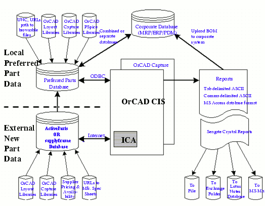
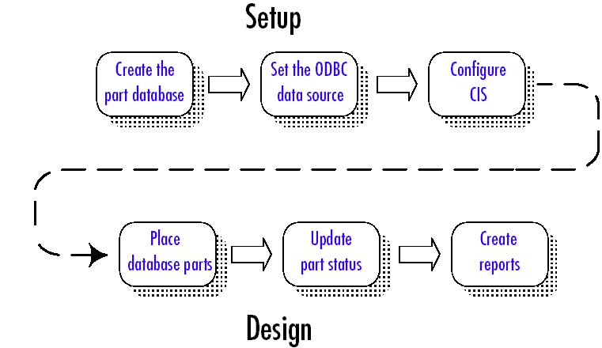
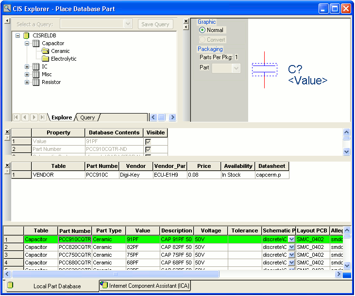
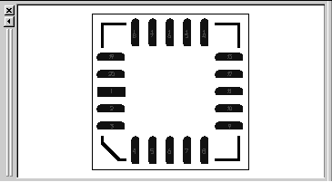
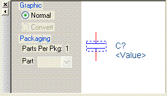
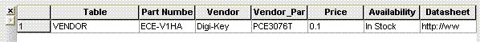
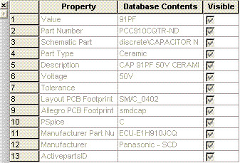
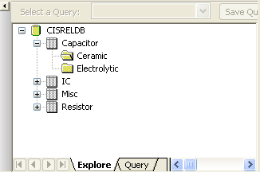
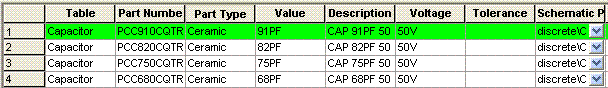

|
|
|||||||||
|
|
|
|
|
|
|
|
|
|
|
Capture Component Information System (CIS) is a part management system that is available as an option for use with OrCAD Capture. OrCAD Capture CIS helps you manage part properties (including part information required at each step in the printed circuit board design process, from implementation through manufacturing) within your schematic designs.
CIS provides access to local (preferred parts database) and remote part databases that contain all relevant information for the parts used in your designs. This information may include company part numbers, part descriptions, PCB layout footprints, technical parameters (such as speeds, tolerances, and ratings), and purchasing information.
With CIS, you can select a part from your preferred parts database or a remote database and place it directly in your schematic design. You can configure CIS to transfer any or all properties associated with that part to the schematic when you place the part. CIS maintains a link to the engineering database part so that you can retrieve other part properties at any time. Linking placed parts to your preferred parts database gives you access to complete part information during the schematic design process.
If you need a part for your design that is not yet in the parts database, you can create the part in the design and add the part to your part database immediately or at a later time. You can also link a non-database part you've created before to a database part at any time.
The CIS internet component assistant (ICA) allows you to access new components over the Internet. After finding an part, you can download its component information to create temporary parts in your local preferred part database (PPD). You can immediately place the temporary part in your schematic designs. Temporary parts can then be elevated through your enterprise approval process, assigned corporate part numbers, and accepted as preferred parts within the database.
|
|
To use CIS in your printed circuit board design flow, you or your system administrator must perform the following setup tasks. |
|
|
Create the preferred part database. This involves creating and entering the part data appropriate for the database. |
|
|
Set up the Open Database Connectivity (ODBC) data source to point to the preferred part database. |
Each of these tasks is described in Chapter 2, "Setting up OrCAD Capture CIS."

|
Select parts with associated properties from the database and place them on schematic pages in your design. |
|
|
Check the status of placed parts and update placed part properties to reflect changes to the database. |
|
|
Generate bills of materials and other reports using both design and part database information. |
The CIS work environment includes two specialized windows that allow you to manage your local part database and explore sources of part data--the CIS explorer and the part manager. All the CIS functionality for these windows is integrated into Capture menus.
The CIS explorer window allows you to search for and retrieve a variety of part information.
The main window contains two tabbed windows--the local part database and the internet component assistant (ICA).
The following table lists the windows available for each tabbed window.
The CIS explorer window displays in one of the following three modes, depending on which of the following CIS features you are using:
The mode is displayed as part of the window title bar.
The footprint window displays the Layout-generated PCB footprint associated with the currently selected database part.
Note: The footprint window is only available if you chose to view OrCAD Layout-generated footprint libraries during installation.
The part window displays the Capture library part associated with the currently selected database part. If the part has a convert (such as a DeMorgan equivalent), you can select it. For a multiple-part package, you can select the specific part in the package.
The relational table part window displays the relational table data for the selected part. 
The visibility window displays the default settings for which part properties are visible on your schematic page. You can use the visibility window to override these default settings. You can also set custom visibility settings for the current part selection
You can also use the visibility window to display a compact summary of the part properties and their contents for the part you have selected in the database parts window. You can see more of the properties and contents in this view because the visibility window displays them in rows rather than columns.
The explorer window allows you to search for parts using local data from your preferred part database. The window contains two tabbed sections--Explore and Query. In the explore tab, you can search for parts using a hierarchical tree organized by part type. The Query tab allows you to further filter your selection based on parametric or field data and save them.
Note: If you make changes to column width or hide a column in Explore view (Explore tab), the same settings will not be retained when you change to the Query view (Query tab) and vice-versa
The database parts window displays the results of your part browsing and database queries.
Note: Roll the mouse wheel up and down to scroll through vertically in the database parts window.
Note: Hold down the SHIFT key and roll the mouse wheel up and down to scroll through horizontally.
Note: Click the mouse wheel button and drag it to the right or left in the database parts window to scroll horizontally.
Note: Click the mouse wheel button and drag it up or down in the database parts window to scroll vertically.
|
|
The ICA home page window provides access the ActiveParts and supplyframe portals. These portals give you access to parts on the Internet. When you select a parts database portal from the ICA home page, CIS replaces the home page with the parts search page. Then, you can use the parts website interface to search for a part in its database. Because this is a live link to the database, you always have access to the most recent part information. |
|
|
When you find a part that you want, you can place it, along with its component information, directly onto a schematic page. When placing parts from a parts database website, CIS users have access to OrCAD schematic representations of parts over the Internet. Component information associated with parts may include: |
Note: When placing parts from the ActiveParts and supplyframe portals, CIS users have access to OrCAD schematic representations of parts and PCB footprints over the Internet.
The part manager window summarizes the status of all the parts in your design and provides a graphical interface for creating bill of materials variants.
The part manager window consists of two panes:
The left side pane displays a tree view similar to Windows Explorer. The tree view is a hierarchy of groups, subgroups, and BOM Variants found in a design. You can quickly move components from Common to groups and subgroups to BOM Variants folders from the tree view. It allows you to create and edit groups, subgroups, and BOM variants. In the tree view, the core design is at the topmost level. Under the core design, there are the Groups and the BOM Variants folders at the same level.
You can show or hide the tree view using the Show/Hide Tree view menu command and its corresponding button on the toolbar. This command toggles between the show and hide mode.
You can also expand or collapse ALL of the folders underneath a selected folder in the tree view using the Expand/Collapse Tree Item command or the corresponding toolbar button. Folders on the same level, or higher than the selected, will not be expanded. For information about the part manager window tree view, see "Using the part manager window tree view" .
The right side pane of the part manager displays a list view with the following information for each part in your design:
You can configure the part manager window to show other part properties in addition to the standard part information listed above.
To hide or show part properties in the part manager, choose Configure Part Properties Display from the View menu.